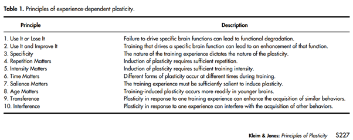

Mindset
Mindset
It is the ability of the brain to change, adapt, and modify both structure and function over time in response to experience. So, whatever the experience is; good or bad, our brain is making a new neural connection. By learning something new, the neurons create more connections between them. More connections mean the neurons can send and receive more messages, thus stretching a part of the brain. This makes the brain more elastic so that it can hold more information.
Just like a dough which in start is quiet rigid and once we start kneading the dough it becomes more elastic and then we can mould it in any shape we like. Our brain is like a dough too which is experience driven and learning is a key. As per Donald Hebb ‘Neurons that fire together, wire together.’ While, Kleim Jones said there are 10 main principles:
Now, this will benefits people a lot. Experiences can enhance performance and by doing the repetition people can make their brain more elastic. Hence, firing more neurons together.
Repetition Matters: I can take this as one of my golden rule. To do the code everyday. It will help me in crafting my skill.
Intensity Matters: To make my brain more elastic so it absorbs more information. And more likely to achieve results.
Use it and Improve it: In recent past I experience Sesamoiditis pain. I recently learned that I have to do some stretch exercise of Plantar fascia muscles in order to improve the pain. Sometime weaker muscles lead to the injury. Well, I’m recovered now. And I take this learning along that by doing continuous learning I can improve with time.
I will be doing the physical exercise especially hot yoga which is more involved in stretching and helps increasing blood flow to the brain. And to keep my brain function properly I’m making sure that I keep drinking plenty of water. Also making sure that my brain gets all the necessary vitamins to function properly. And it’s a blueberry season. I’ll be eating blueberries which is considered antioxidant superfood. Helps regulate eye health and blood sugar.
The way we see the world around us and how we behave towards life is called our mindset. We can choose to have a fixed mindset, or to have a growth mindset. When we have a fixed mindset things get too hard. Negative thoughts creep and we start to give up easily. Like it’s hard, I can’t do this, and we may come up with many other excuses.
However, we can always have an option to choose growth mindset.
It helps us believe that the goals are within reach with effort and consistency. Life is a great big adventure filled with experiences. And it shows that failure is a part of our journey. And the obstacles we encounter will only make us stronger. Challenges and mistakes will help me learn.
I learnt that perfection does not exist and aiming for perfection is like running a race without a finishing line. It only leads to exhaustion.
It doesn’t surprise me when I read about growth mindset. Putting effort is the way to achieve your goal. But Neuroplasticity was a new concept for me, and now I connect the dot with growth mindset which is exactly what neuroplasticity tells us. These two concepts really get along with each other. I’m taking 10 golden rules with me here.
Referring the answer to following sections above: